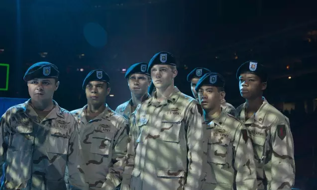
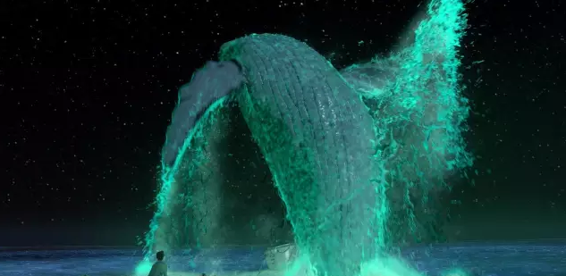
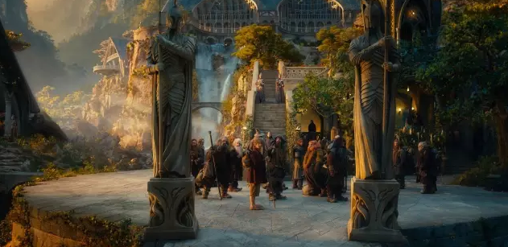
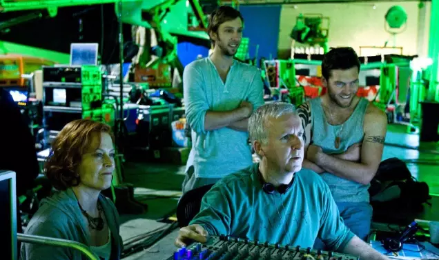

关于本片，最大的话题点恐怕还得是李安在技术上的推进。
大银幕120帧、4K、3D的直接观感固然特别，但当我们浸入后，观感的营造还是要看电影的整体。
在《少年派的奇幻漂流》后，观众对于李安的期待自然不会小，加上我们早已知晓的李安这次在高帧率上的尝试，进一步抬高了大家对于《比利·林恩的中场战事》的期待值。
不过，李安并没有讲一个野心勃勃地故事，也没有放入特别宏大的场面。一切，可能没有很多人预想的那么绚烂夺目。
影片用中场表演前后的经历，穿插前方战事现场，用一双经历过真正的残酷的双眼，旁观眼前的追捧、爱戴、热闹、虚假与冷漠，有一种纪实感。这种两条线索的对碰也是本片的最大看点，引发着一次又一次的情绪的对位与冲突。
很多细节都透着精准的表达意图，当英雄直面繁琐的虚假，这其实有些尴尬，但更多是悲哀。李安对于人情的表现依然稳准，情绪一点点积累后，后面会有比较触动的地方（为了不剧透，就不细说了）。虽然细节丰富，但是整体上，可能少了一些更抓人的东西，稍微有点遗憾。音乐不错，有几个段落印象很深，又是今年值得关注的电影原声。
引人关注的技术方面。上一次，李安通过在《少年派的奇幻漂流》中对3D的运用，做出了那些震撼绝美的3D画面效果。在助推了3D后，李安这次再推新招——高帧率。
终于在大银幕上见识过了120帧版后，有一种感觉比较有趣，虽然是第一次看这样版本的电影，但画面的感觉却跟想象中差不多（或者说满足了我对它技术效果的预期），极度顺畅，动态模糊为零。
类似的观感，我们在游戏中或者高清电视中，都可以看到，但是，它这就能破坏电影感了吗？我觉得谈不上，或者说，这不是破坏，是颠覆，是革新观众对于电影的认知，早该如此了。
类似争议在彼得·杰克逊的《霍比特人》48帧率版面世时，就出现了，而《霍》的那些壮阔奇幻的画面，配合上48帧率后，在一些人眼里，更是成了十足的“游戏感”。但是，既然电视可以提高帧频，游戏可以设置更高的帧率，为什么电影不能拥抱它呢？
《霍》的时候，大陆影院直接放弃了48帧，而这次依托李安的影响力，我们有了有限的高帧率（60帧、120帧）版本放映场次，当然，更广范围的普及，应该还是得等詹姆斯·卡梅隆来了。
诚然，电影存在的意义，不是专注于复制现实。24帧，胶片，都有它们独有的味道，无论是电影人还是观众有惯性的不舍都是可以预见、可以理解的。但是当技术上可以使得电影产生更强的现场感时，当有人开始推动革新时，才算是不辜负时代进步的馈赠吧。电影感，不是24帧独有，就像它不是胶片独有的一样。